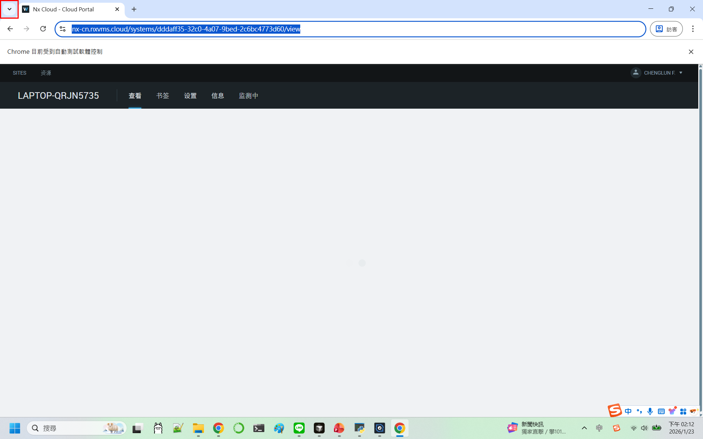
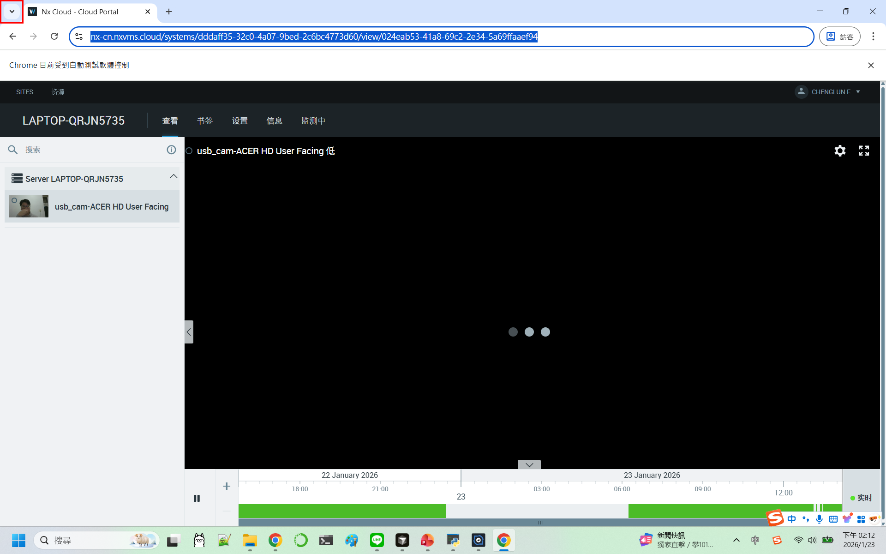
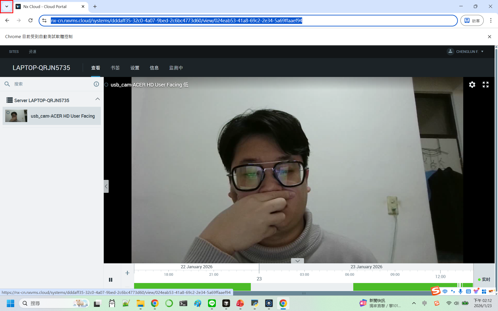
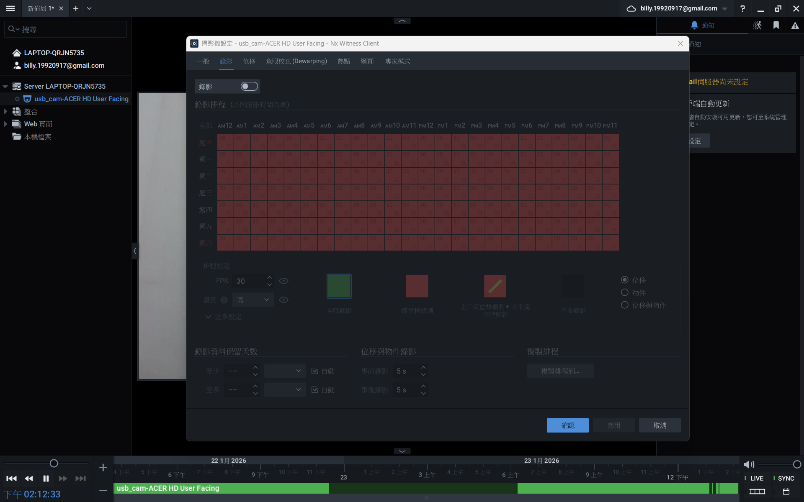

測試步驟詳情
成功點擊「查看」頁簽，頁面已切換
檢核物件：
查看頁簽頁面標籤區域頁面內容區域

執行時間: 2026-01-23T14:12:17.870944
成功點擊 server，設備列表已展開
檢核物件：
Server 項目設備列表展開的設備樹

執行時間: 2026-01-23T14:12:20.026145
成功點擊 usb-cam，視頻預覽區域已顯示
檢核物件：
USB 攝影機項目設備列表視頻預覽區域
執行時間: 2026-01-23T14:12:21.846217
影片已載入完成且可播放，所有播放元素已驗證
檢核物件：
Video 播放器播放控制按鈕視頻畫面區域播放狀態指示
執行時間: 2026-01-23T14:12:22.075143
已等待影片播放 7 秒，播放狀態正常
檢核物件：
Video 播放器播放進度播放時間顯示視頻畫面內容

執行時間: 2026-01-23T14:12:29.244016
瀏覽器已成功關閉
執行時間: 2026-01-23T14:12:34.255243
步驟執行成功（連續失敗: 0）

執行時間: 2026-01-23T14:12:34.319390